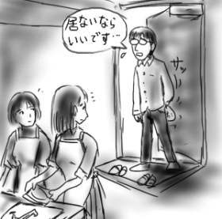
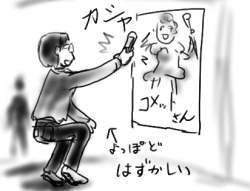
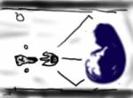
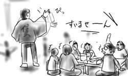
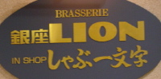
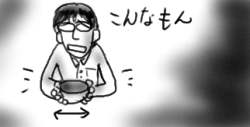

帰宅してみると、郵便受けに宅配ピザや宅配寿司などの宅配広告がたくさん突っ込まれていました。そこでぼんやり考えてみたのですが、一人で暮らして始めてかれこれ9年間ほど経過しているにも関わらず、どうやら僕には一度も自宅へ宅配食べ物を届けてもらった記憶がありません。広告の配付先として間違ってる！というのもさることならが、どうしてこんな事態に陥ってるのでしょう？
まず、学生時代の6年間に僕の住んでた部屋は、平岩作詞の「死臭のバラード」に歌われたようにやたらと細長く、こたつとTVを置いた時点で人がくつろげるほど幅が残っていなかったため、滅多に友人が寄り付きませんでした。ちなみにリンク先の背景画像は僕が枯らせたサボテンです。サボテンって枯れるんだ。それはともかくとして、みんなが楽しく集まったりしないと宅配ピザなんかはあまり頼もうとは思いませんよね。宅配ピザみたいな味の濃い物をぺろりと平らげるだけの胃袋が僕に備わっていないだけかもしれませんが。と、ここまで書いた時点で、同じアパートに住んでた同級生の部屋に集まってピザを頼んだことがあることをふと思い出しました。まぁ彼の部屋の方が一畳分くらい広かったんですが。そういえば彼にはいろいろ差し入れを貰っていたので、ある日お礼のたこ焼きを持って部屋を訪れたところ、彼は居なくて女子二人がにこやかに料理を作りながら待っていたというのは、僕史上かなり上位に位置するトラウマです。

就職してからの僕は、学生時代に比べて田舎住まいということもあって、結構広めのところに暮らしています。もう細長いなんて言わせない！みたいな。無駄な空間では小躍りだって出来ます。ただ、今度は田舎暮らしが災いしてやっぱり友人は寄り付いていません。相変わらず、宅配ピザみたいな味の濃い物をぺろりと平らげるだけの胃袋は僕には備わっていないですし、いやでもこの宅配寿司くらいなら？と広告に目をやると値段が結構お高くて速効あきらめました。
以上が鍵を開けて郵便受けを確認してから、僕が部屋にかばんを置くまでに考えたこと全てです。このまま一生頼まないで暮らすか、胃袋もしくは財布にチャレンジしてみるか、それが問題です。
今日の「ごくせん」は、いくら仲間由紀恵が出てるとは言え、さすがに直視できませんでした。ちゅ、ちゅうがくせいにっき？
そういえばこのゴールデンウィークは斑鳩を一度もプレイしなかった。
今日のフリトレー産コーンスナックは「築地銀たこ」(コーンスナック)でした。食いながら本を読んでたらいつしか夢の世界へ。
目が覚めたら「築地銀たこ」(コーンスナック)のせいで胸焼け。アンニュイな休日ですね。ちなみにコーンスナックではフリトレーの右に出るものはいないんじゃないかと個人的に思ってます。というか何か僕を眠らせる変な成分が入っていませんか？(僕が変です)。(ref:5/4分)
数日前からサターン版「レイディアントシルバーガン」を続けてたりします。サターンモードでやると、アーケードでは2ステージから選択だったところが統合されて両方プレイさせられ、さらにオリジナルボスが出てくるので1時間では終わりません。しかも成長した武器をセーブしておいて繰り返し遊ぶのが前提になっているので(多分)、後半のボスがバカみたいに堅くなっていたりするんですが、アーケードモードでプレイすると割とすんなり武器が成長し、30分程度でさっくりクリアできるので、今まであまりやってなかったアーケードモードをプレイしています。こってりたっぷりのサターンモードに比べて、ほどよいボリュームのアーケードモードって感じで。何事もほどほどがいいよね。27歳にもなって古いゲームを未だに思い出したように遊ぶのがほどほどかというと疑問ですが。
晴れた！秋葉へ！(挨拶)
つか、これは猛暑というのではありませんか。駅に着いた途端イヤな熱気に当てられ、ここが秋葉であるということを五感で知ることになりました(主に嗅覚で)。哲を待つ間、ピンクハウスとバンダナと穴あきグローブを見ました。ん、いいスコア！(最低)
哲と合流して、銀河が見えると(哲やナルキが)言う神田のカレー屋「トプカ」へ案内してもらう。欧風カレーとインドカレーの大きな2種類の体系があり、それぞれにいろいろな具のカレーが取り揃えられているという形態なのですが、主体性がないので言われるがまま欧風カレー科のビーフカレー(インドカレーに属していたら大問題)を注文。出て来たビーフカレーを見て驚愕。なぜならカレーにサイコロステーキが乗っていたから。煮込もうよ！なんかジューシィな肉汁とか滴ってるし、これは何かが違うのでは。ルーは１から丁寧に煮込んで作ってあるのが分かってとてもいい感じなのに、口の中でサイコロステーキの肉汁が広がってそれを打ち消すので、なんとも複雑な気分に。これなら欧風カレーに分類されているビーフカレーではなく、インドカレーの分類のカレーを頼んでおけばよかったと思った次第。結論としては、確かにまずくはないんですが銀河は見えませんでした。小宇宙もね。哲はモスのタンドリーチキンバーガーでは銀河が見えなかったというので味覚の差だと思います。もう信じない！(嘘)
腹ごしらえも済んだので、適当に秋葉をウロついていると、石丸電器で西原さんの大好きなアニメ「コメットさん」のポスターが貼ってあったので写メールで激写！送信！
西原さんの返信：「今から行く！」

セガのゲーセンに「ギガウィング２」が置いてあったのでコインを入れてみる。0点クリアムービーの圧縮した映像では奇麗に思えた背景などが実際に見ると妙にポリゴンぽくてテラテラしててどうもイマイチでした。あれぇ？ゲームは2面で死亡(早い)。
西原さん合流後、みんながどうしてもというので渋々とメイド喫茶こと「Cure Maid Cafe」に行く。メニューに書かれている「日替わりケーキについてはお気軽にメイドにお尋ねください」という文は何か変だ、明らかに変だ、おかしい！しかしこのお店のマークはR-TYPEのボスにしか見えないね。

適当にぶらぶらした後、秋葉をはなれて新宿へ飲みに出るというみんなと別れて僕は素直に帰宅しました。
風が強く、4/16日分の日記のように引き糸がガラス戸を打つ音で安眠できず。いい加減ガムテープで止めないと！
買って来た本を読んで(「彼氏彼女の事情」13巻(花とゆめコミックス)、「低俗霊DAY DREAM」3巻(角川エースコミックス)、「二つのスピカ」2巻(フラッパーコミックス)、冲方丁「微睡みのセフィロト」(徳間デュアル文庫))、おやつにフリトレー「ドリトス」のベーコン&バジル味を食ってたらいつしか夢の世界へ。
目が覚めたらドリトスのせいで胸焼け。アンニュイな休日ですね。ちなみにコーンスナックではフリトレーの右に出るものはいないんじゃないかと個人的に思ってます。ホット・メルト・トッピング製法最強。
深沢さんと米内さんがGWで上京しているということで、まさしろ、哲、奥野で迎撃。 正確には新宿にて飲み。
ちょうどよい快速を捕まえられず、僕だけ集合時間に遅れてしまったので、みんなが先に到着している新宿コマ劇場の横の信玄屋形というところまで一人で行きました。入店しても店員が誰も相手をしてくれないので、入り口脇の下駄箱のそれっぽいところに靴を放り込んで上がろうと思ったところ、ようやく現れた店員が「どちらへ？」と聞いて来ます。先に入ったメンバーと合流なんですと答えると、「靴どこ入れた？」と言うので、先ほどの下駄箱を指差しました。すると店員はその下駄箱を開け放ち、僕に自分の靴を取り出させ、ビニール袋を突き出すのです。「これ入れて」。

かように信玄屋形というところは、店員の態度が悪いかわりに食物が安くて味がそれなりによく、飲み放題750円という狂った価格で水のような(not 水のように)ドリンクが飲めるのです。安さという点から学生客が多く、というか僕らが店内最年長だったのではあるまいか。注文をしようと「すいません」と声をかけると、声ではなく手で遮られて無視されたのは初めての経験です。

その日は昼間何も飲み食いしてなかったので予想以上に酒のまわりが早く、何を話したかあまり覚えていません。関係者各位には申し訳ない。
信玄屋形を出る時に、他のみんなは僕が靴を取り出させられた、まさにその下駄箱から靴を取り出して履いてました。そこでよかったんじゃん！
ギガウィング２(以下GW2)の0点クリアムービーなるものを教えてもらったので、見る。うーわー！
GW2は近所のゲーセンにまったく入荷されなかったため、まったくやってないのですが、今さらその背景の美しさと弾幕の美しさに釘付け。4面ボスが弾を吐き出し続けながら回転を始めた時はどうにかなると思いました。スコア0点でクリアするためには、敵弾を跳ね返し、なおかつ無敵状態になるリフレクトというフィーチャー(結構連発できる)を使わずに、得点アイテムも取らずにひたすら弾を避け続けなければならないそうです。やってるよ！(驚愕)
しかし、敵破壊点(敵を破壊すると加算される点数)もなく、撃ちこみ点(敵に弾を当てれば加算される点数)もなく、敵機に当たっても自機が死なないなど、思いきったシステムだなぁと改めて思いましたよ。全てはリフレクトというフィーチャーのためですか(最後のは横画面縦シューティングの制限のためかとも思いますが)。
なんだか当てられたので、サターンで「レイディアントシルバーガン」を始める。斑鳩と違ってチェーンが一方通行なので(色の違う敵を撃つとチェーン数はリセットされる)、なんとも複雑な印象を受ける。斑鳩はチェーンシステムを洗練させてて偉いなぁ。明らかに敷居が下がってるのにどうして誰もやってないのかなぁ。
看板シリーズ:

「IN SHOP しゃぶ一文字」。さっぱり意味がわかりません。
出社して、昨日の先輩(4/30の日記参照)に「昨日、本当にあきたこまちが売り切れてましたよ」と伝えたところ、「それでどうしたの？」「何の米買ったの？」「今お米5kgっていくらするもんなの？」「今、生産者価格と消費者価格ってどっちが高いんだっけ？」など、質問攻めにあいました。お米への興味が溢れ出してます。最後の質問は、どうなんだろう？
ゴールデンウィークの中日ということで有給を取っている人も多く、オフィスの人もまばらなので、いつもは匂いを気にしてまったく食べないカップ麺(どん兵衛)を夕方にずるずるとすすってみました。そこへ、上司がいきなりやって来て、「これでも食ってゴールデンウィーク中日を乗り切ろう！」と言ってみんなにカップ麺を配り始めました。
「どんな種類があるのかなぁ」という持ち前の傍観主義を発揮して最後まで配られるカップ麺を観察していたら、最後に残ったのは「どん兵衛」。しかも、配られたカップ麺にすぐに食べられるようにとご親切にお湯が注がれており、僕は２つのどん兵衛を前に頭を抱えるしかありませんでした。というところで目が覚めました。夢でよかった！とその時は思ったのですが、後から思い返してみると、夢ならではの思い切ったことをしてみよう度も、悪夢としても、あまりにしょぼすぎる。これが僕の人間としての器の大きさでしょうか。カップ麺サイズ。

…。